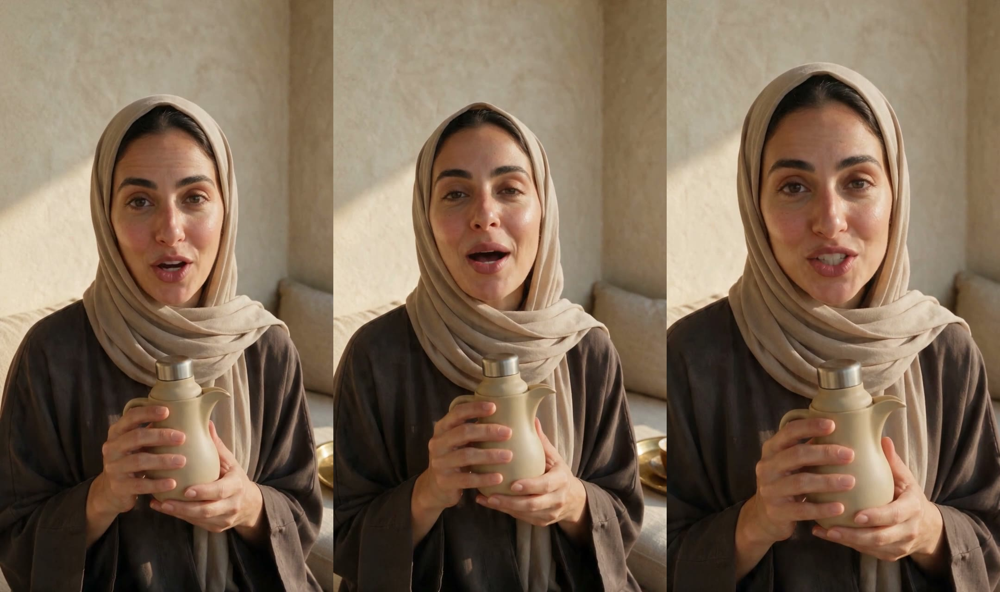

أعمالنا / دفوة — اختبار الجمل الافتتاحية
الإعلان نفسه، بثلاث جمل افتتاحية مختلفة، والحكم لك.
ما تراه في هذه الصفحة نسخٌ متطابقة عمدًا من إعلان قصير عمودي: الممثلة نفسها، والغرفة نفسها، والضوء النهاري ذاته، وجملة ختامية مشتركة تجمع كل نسخة مع أخواتها. الفارق الوحيد هو ما تفتتح به حديثها. شاهد النسخ كاملة، ولاحظ متى يشتد انتباهك ومتى يخفت؛ فهذا الإحساس تحديدًا هو ما نأمل أن تخرج به.
لماذا تصحّ المقارنة بين هذه النسخ أصلًا
يمكن لأي منتج أن يصوّر إعلانات مختلفة الأجواء ويترك لك التخمين. لكن التباين في المكان أو الوجوه أو الملابس يلوّث المقارنة قبل أن تبدأ. حين تثبت الكاميرا والممثلة والضوء والخاتمة، ويتبدل المنطوق الافتتاحي فقط، يصبح ما يتبقى من فروق بين النسخ مرده مباشرة إلى طريقة الافتتاح؛ وهذا هو المغزى من التثبيت كله.
على أن ما تراه لا يثبت شيئًا عن الأداء. لم تُشغَّل هذه الإعلانات ضمن بث مدفوع قط، ولا نملك عنها بيانات أداء من أي نوع، ولا نزعم أن افتتاحية منها غلبت سواها. كل ما تتيحه الصفحة هو أن تتذوق الفروق وترتّب ميلك الشخصي؛ أما الحكم الأخير فيُصدره جمهورك أنت حين تختبر عنده.
افتتاحيات مختلفة، وإعلان واحد
«كل مرة أرجع لقهوتي... ألاقيها باردة.»
تفتتح الممثلة باعتراف صغير عن فنجان يعود إليه صاحبه فيجده فاترًا. المشاهد يتعرف على اللحظة قبل أن يتعرف على المنتج، فيبقى باحثًا عن الحل. يناسب هذا البدء المنتجات التي تعالج انزعاجًا متكررًا — كالأواني الحافظة للحرارة — والمشتري العملي الذي يشتري الراحة لا الفضول.
«قهوتي تبقى حارة من البيت... لآخر مشوار.»
هنا يبدأ الكلام من النهاية السعيدة: الوعد محقق في الافتتاحية نفسها، فيتخيل المشاهد يومه هو. يليق هذا المسار بالمشتري المتعجل الذي يريد الخلاصة قبل التفاصيل، ويلائم منتجات يظهر أثرها سريعًا كأدوات التنقل اليومية.
«السر مو في القهوة... السر في ترمسي هذا.»
تبدأ الحيلة بإنكار متوقع ثم انقلاب يردّ السبب إلى الترمس نفسه، فتُفتح فجوة معرفية صغيرة تدفع المشاهد إلى البقاء حتى تُسد. يخدم هذا الطرح العلامات ذات القصة أو التصميم المميز، والمشتري الذي يستمتع بالاكتشاف قبل الشراء.
الجزء الذي لا يتغيّر
«ترمسي يحبس الحرارة بالداخل... وقهوتي حارة وين ما أروح.»
الجملة الختامية كُتبت لتعمل بعد أي افتتاحية: بعد شكوى، وبعد وعد، وبعد تشويق. صيغتها عامة بما يكفي لتكون امتدادًا طبيعيًا لأي مسار، ومحددة بما يكفي لتحمل وعد العلامة كاملًا. هذا التوازن — لا البلاغة — كان القيد الحقيقي في كتابتها.
هذا تصوير واحد، لا ثلاثة متطابقة. النصف الأخير من كل نسخة هو الملف نفسه، يوضع خلف كل افتتاحية في المونتاج، وبطاقة النهاية تُركَّب في التمريرة ذاتها. ثم قارنّا الملفات النهائية إطارًا بإطار، لأن صحّة سكربت البناء وصحّة الملف المُسلَّم دعويان مختلفتان.

كيف بُني هذا العمل
- ٠١
صورة واحدة، لا ثلاث
صورة عمودية واحدة للمتحدثة وهي تمسك الترمس، مولَّدة بنسبة تسعة إلى ستة عشر. كل لقطة من اللقطات الأربع في هذه الصفحة تبدأ من الصورة نفسها، ولهذا لا تكون الغرفة والعباءة والضوء والتأطير متشابهة فحسب بين النسخ: إنها الإطار نفسه.
- ٠٢
افتتاحيات من الإطار نفسه
تُمرَّر تلك الصورة إلى نموذج الفيديو بوصفها الإطار الأول، مرة لكل افتتاحية، ولا يتغيّر بينها سوى الجملة المنطوقة وأداؤها. الصوت يخرج من تمريرة التوليد ذاتها، فمطابقة الشفاه ناتجة عن التوليد لا عن دبلجة لاحقة.
- ٠٣
جسم واحد، يُعاد استخدامه
النصف الأخير لقطة رابعة من الصورة نفسها، وُلِّدت مرة واحدة ووُضعت خلف الافتتاحيات جميعًا. لا يُعاد توليدها لكل نسخة، فلا يبقى شيء تنجرف إليه.
- ٠٤
بطاقة النهاية من متصفح، لا من ffmpeg
هنا يفترق هذا البناء عن نظيره الإنجليزي: أداة الكتابة في ffmpeg لا تعيد ترتيب الاتجاه ولا توصل الحروف العربية، فيخرج اسم العلامة حروفًا مفكّكة معكوسة. لذلك تُرسَم البطاقة في متصفح حقيقي بخط عربي، ثم تُركَّب على تعتيم خفيف في المونتاج.
- ٠٥
الفحص قبل الاعتماد
تُقرأ الملفات النهائية بأداة الفحص وتُقارَن إطارًا بإطار، لا بالنظر: كان على النصف المشترك من النسخ أن يُقاس بوصفه التصوير نفسه قبل أن تقول هذه الصفحة إنه كذلك.
الموجز الذي كتبناه لأنفسنا
- المنتج
- ترمس عازل للقهوة العربية بلون رملي غير لامع، وقوام يحيل إلى الدلة.
- الجمهور
- المتنقلون في يومهم ممن يحبون أن تبقى قهوتهم العربية دافئة حيثما حلّوا.
- القيد
- ثبات كل عناصر المشهد — الممثلة والغرفة والضوء والخاتمة — مع تغيير الافتتاحية لا غير.
ما الذي تنتبه له
لحظة التسليم
راقب الانتقال من نهاية الافتتاحية إلى بداية الجسم المشترك؛ المفترض أن تمضي الجملتان بنَفَس متصل، فلا يشعر المشاهد بانقطاع يوقظه مما يشاهده.
ظلال الجدار الجصّي
الضوء النهاري يسقط على الجدار الجصّي الدافئ ويرسم ظلًا هادئًا خلف الممثلة؛ هذا الثبات البصري بين النسخ هو ما يجعل المقارنة عادلة — لاحظه من نسخة إلى أخرى.
ترمس بلا حروف
تأمل الترمس الرملي المائل بقوامه إلى الدلة: لا شعار مطبوع ولا حرف على سطحه أصلًا؛ ينصرف انتباهك إلى الكلام المنطوق لا إلى العلامة، وهذا مقصود في التصميم.
ما ليست هذه الصفحة
من باب الصراحة: كل إطار في هذه الإعلانات مولَّد بالكامل بالذكاء الاصطناعي، فلا تصوير حقيقي ولا ممثلة فعلية وراءه. و«دفوة» اسم متخيل أنشأناه لهذه الصفحة أساسًا؛ لم يكلّفنا بها أي عميل. ولم تُشغَّل ضمن أي حملة مدفوعة قط، ومن ثم لا نعرض نتائج أداء ولا ندّعيها؛ هذا تمرين حرفي يُظهر طريقة عملنا، لا سجل عملاء.
لا نعرف أيّ هذه الافتتاحيات أفضل، وهذه الصفحة لا تستطيع إخبارك. لا يوجد خلفها عدد مشاهدات، ولا زمن مشاهدة، ولا معدل نقر. خذ الفكرة إلى أرضك: اختر من هذه المسارات ما يليق بمنتجك، وانشر النسخ أمام جمهورك بإنفاق صغير متكافئ، ثم أمسك بالافتتاحية التي كافأك بها مشاهدوك وثبّتها في إعلانك القادم. الرأي النهائي ليس عند الاستوديو ولا عند هذه الصفحة؛ بيانات جمهورك هي الحكم.
ليست لدينا تقييمات منشورة بعد، ولن نستعير مصداقية لم نكسبها: لا أسماء عملاء، ولا أرقام تفاعل، ولا دراسات حالة مُختلقة. ما نستطيع عرضه هو العمل والطريقة كاملين، والحكم لك أنت.